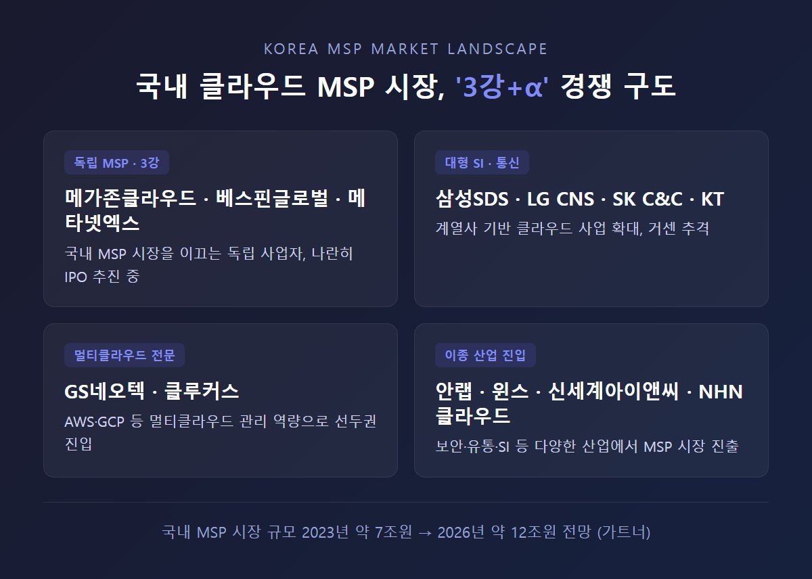
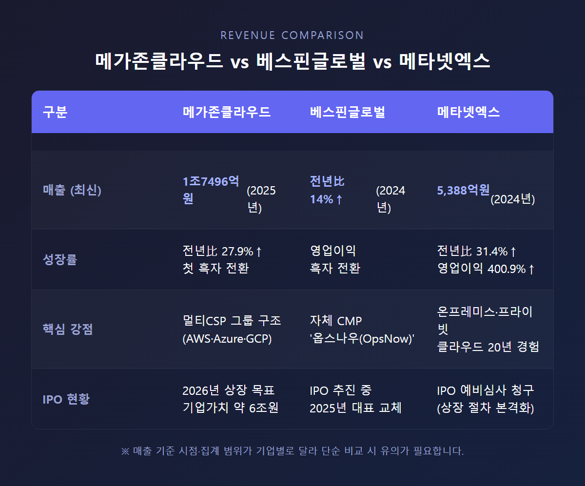
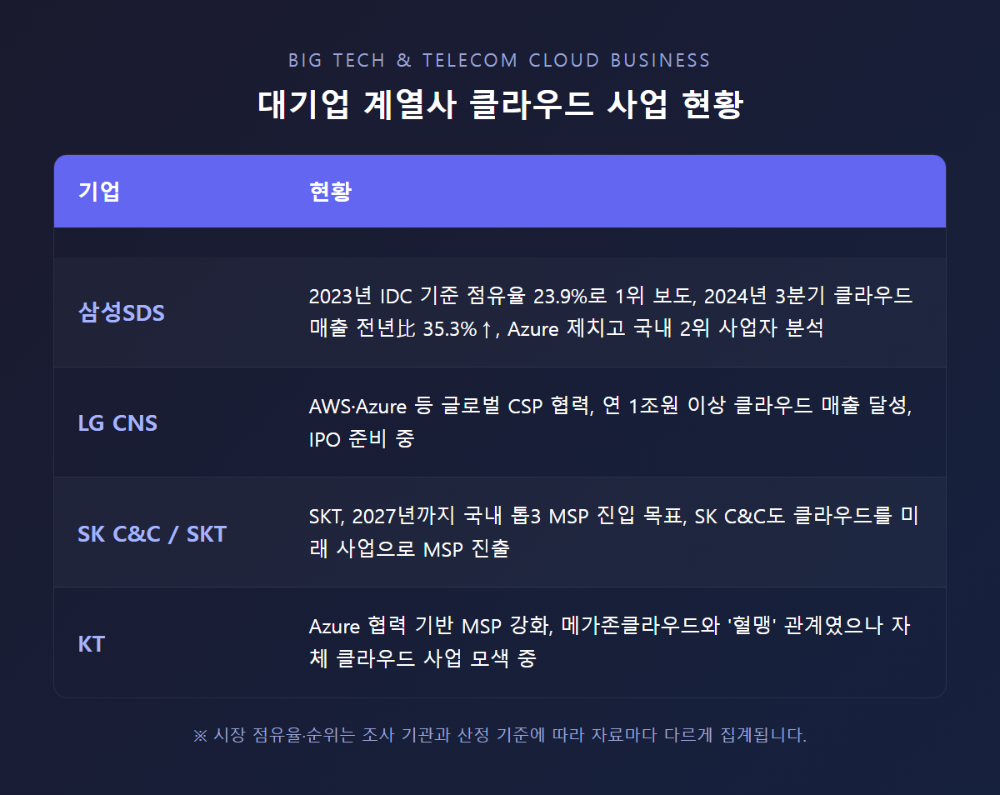

메가존클라우드 경쟁사 총정리, 12조 MSP 시장 판도는
메가존클라우드는 국내 MSP 시장 점유율 1위로 평가받는 클라우드 매니지드 서비스 기업인데요, 2025년 연결 매출 1조7496억원에 첫 흑자 전환까지 이뤄내며 IPO를 앞두고 있습니다. 하지만 이 시장이 2026년까지 약 12조원 규모로 커질 것으로 전망되면서, 베스핀글로벌·메타넷엑스·삼성SDS 등 쟁쟁한 경쟁사들도 함께 몸집을 키우고 있습니다. 오늘은 메가존클라우드를 둘러싼 국내외 경쟁 구도를 하나씩 짚어보겠습니다.

메가존클라우드, 지금 어디까지 왔나
먼저 메가존클라우드의 현재 위치를 짚고 넘어가야 경쟁사들과의 비교가 의미가 있겠습니다.
1998년 설립된 메가존클라우드는 2000여명의 클라우드·AI 전문가를 보유하고, 국내외 8000여 고객사를 상대로 디지털 전환(DX) 파트너 역할을 하고 있습니다. 그룹 구조도 흥미로운데요, 메가존클라우드(AWS), 제니스앤컴퍼니(MS 애저), 메가존(GCP·알리바바)으로 자회사를 나눠 "모든 클라우드 서비스를 다룬다"는 점을 핵심 경쟁력으로 내세우고 있다고 합니다.
실적 흐름을 보면 성장세가 뚜렷합니다.
| 연도 | 연결 매출 | 비고 |
|---|---|---|
| 2022년 | 1조2660억원 | - |
| 2023년 | 1조4265억원 | 2년 연속 조단위 매출 |
| 2025년 | 1조7496억원 | 전년 대비 27.9% 증가, 첫 흑자 전환 |
2025년에는 영업이익 흑자 전환과 함께 당기순이익 82억원 흑자를 달성했고, 조정 EBITDA는 208억원을 기록했습니다. 사업 부문별로 보면 AWS 관련 비즈니스가 여전히 견조했고, 구글 클라우드·구글 워크스페이스 매출은 연환산 기준 2000억원을 돌파했습니다. AI 관련 매출은 3700억원, 보안 관련 매출은 700억원을 각각 넘어섰고, 해외 사업 매출은 1500억원이었다고 하네요.
향후 계획도 꽤 공격적입니다. 에이전틱(Agentic) AI 시스템 구축, AI 보안·거버넌스 리더십 확보, 멀티클라우드·하이브리드클라우드 포트폴리오 확대를 통해 2030년까지 매출 3배 성장과 영업이익률 15% 달성을 목표로 한다고 밝혔습니다.
특히 미국 시장 확장이 눈에 띄는데요, 2025년 미국 법인 매출이 약 297억원이었는데 2026년에는 3000억원, 그러니까 약 10배 성장을 목표로 잡았습니다. AWS 파트너십을 앞세워 현지 시장 공략에 속도를 내고 있다고 하니, 국내뿐 아니라 해외 시장에서도 경쟁이 본격화될 것으로 보입니다.
그리고 빼놓을 수 없는 게 IPO입니다. 2026년 연내 상장을 목표로 삼성증권·한국투자증권·JP모건을 상장 주관사단으로 선정해 실사 작업을 진행 중이고, 기업가치는 약 6조원이 거론되며 2026년 IPO 시장 최대어로 꼽히고 있습니다. 6000억원 규모의 가용자금과 향후 IPO 공모자금을 활용해 사업을 확장하겠다는 방침인데요, 신규 외부 투자 유치 대신 모회사 메가존이 구주 일부를 인수해 지배력을 강화하는 방안도 논의되고 있다고 합니다. IPO를 앞두고 적자 자회사를 잇달아 정리하며 재무구조를 개선하는 작업도 함께 진행했습니다.
이렇게 메가존클라우드가 탄탄한 실적을 내고 있는 만큼, 이제 본격적으로 이 시장에서 누가 경쟁자로 떠오르고 있는지 살펴보겠습니다.
12조원 시장으로 커지는 MSP 산업
본격적인 경쟁사 비교에 앞서, 시장 규모부터 짚어볼 필요가 있겠습니다.
국내 MSP 시장은 2023년 기준 약 7조원 규모였는데, 가트너 전망에 따르면 매년 약 15~20%씩 성장해 2026년까지 약 12조원 규모로 확대될 것으로 예상됩니다. 글로벌 MSP 시장은 2025년 약 96조원까지 커질 전망이며, 가트너는 향후 5년간 연평균 30% 성장을 예상했다고 합니다.
이렇게 시장이 빠르게 커지다 보니 진입하는 기업들의 면면도 다양해지고 있습니다. 메가존클라우드, 베스핀글로벌, 메타넷엑스 같은 독립 MSP 기업뿐 아니라, 삼성SDS·LG CNS·SK C&C(SKT) 같은 대형 SI·통신 계열사, GS네오텍·클루커스 같은 클라우드 전문 SI 기업, 그리고 안랩·윈스 같은 보안 기업까지 너도나도 뛰어들고 있는 상황입니다. 그야말로 '3강+α'로 불릴 만큼 치열해진 판도네요.

국내 양강 구도, 베스핀글로벌
메가존클라우드와 함께 국내 MSP 시장의 '2강'으로 꼽히는 기업이 바로 베스핀글로벌입니다.
베스핀글로벌은 자체 개발한 클라우드 관리 플랫폼(CMP) '옵스나우(OpsNow)'를 운영하며 1,000개 이상의 기업을 관리하고 있는데요, 이 부분이 메가존클라우드와의 가장 큰 차이점이라고 볼 수 있습니다. 베스핀글로벌이 자체 자동화 솔루션 중심의 사업 모델을 갖춘 반면, 메가존클라우드는 고객 맞춤형 서비스에 더 집중하는 경향이 있다고 분석되고 있습니다.
실적 면에서도 베스핀글로벌의 약진이 눈에 띕니다. 2024년 기준 매출이 전년 대비 14% 증가하며 영업이익 흑자전환에 성공했는데요, 생성형 AI 도입 확산에 따른 클라우드 인프라 수요 증가와 AI 도입 지원 매니지드 서비스 모델 강화가 흑자 전환의 핵심 동력으로 꼽힙니다. AI MSP 사업 확대와 해외 법인 성과가 함께 작용한 결과라고 하네요.
글로벌 확장에도 적극적입니다. 미국, 중동, 중국, 일본, 동남아 등 다양한 시장을 공략 중이며, 미국법인은 누적 매출 5860만달러를 달성했습니다. 그리고 메가존클라우드와 마찬가지로 IPO를 추진 중인데, 2025년에는 대표(사령탑) 교체가 있었던 것으로 보도되기도 했습니다.
이렇게 보면 메가존클라우드와 베스핀글로벌은 국내 MSP 시장의 양대 축이면서, 동시에 IPO 시장에서도 나란히 경쟁하는 라이벌 구도라고 할 수 있겠네요.
메타넷엑스, IPO의 '바로미터'로 주목
3강 중 하나로 꼽히는 메타넷엑스(구 메타넷티플랫폼)도 빼놓을 수 없습니다.
이 회사는 20년 이상의 온프레미스·프라이빗 클라우드 구축 경험을 보유한 게 강점인데요, 2024년 연결기준 매출 5,388억원을 기록하며 전년 대비 31.4% 증가했고, 영업이익은 127억원으로 전년 대비 무려 400.9% 성장했습니다. 사업 부문별로 보면 인프라·하이브리드클라우드 부문 매출이 4,122억원(전년比 35.8%↑), 퍼블릭클라우드 부문 매출이 1,013억원(전년比 28%↑)으로 두 부문 모두 큰 폭으로 성장한 모습입니다.
2023년에는 매출 목표를 7,000억원으로 설정하며 'MSP 톱2'를 노리겠다고 밝힌 바 있고, 1억 달러 투자 유치와 IPO 목표도 함께 발표했었습니다.
특히 주목할 부분은 2025년 10월 사명을 '메타넷티플랫폼'에서 '메타넷엑스'로 변경하며 디지털 혁신을 본격화했다는 점입니다. 임직원 수는 2025년 9월 기준 283명 규모인데요, 한국거래소에 IPO 예비심사를 청구하며 상장 절차를 본격화했습니다. 업계에서는 메타넷엑스의 IPO 진행 상황이 메가존클라우드 IPO 추진 과정의 '바로미터(선행 지표)' 역할을 할 것으로 보고 있다고 합니다. 메가존클라우드 입장에서는 메타넷엑스의 상장 결과가 곧 자신들의 상장 환경을 가늠할 수 있는 척도가 되는 셈이네요.
대기업 계열사들의 거센 추격
독립 MSP 기업들 외에도, 대형 SI·통신사들의 움직임이 심상치 않습니다.
삼성SDS - 점유율 집계 논란의 중심
삼성SDS는 2023년 IDC 조사 기준 MSP 시장 점유율 23.9%로 국내 1위를 차지했다는 보도가 있습니다. 이는 메가존클라우드를 점유율 1위로 보는 다른 자료와는 상충되는 부분인데요, 조사 기관과 산정 기준(매출 규모 기준인지, 클라우드 사업 전체인지, 순수 MSP 사업인지)에 따라 순위가 다르게 집계되는 것으로 보입니다.
다만 확실한 건 삼성SDS의 성장세입니다. 2024년 3분기 클라우드 사업 매출이 전년 동기 대비 35.3% 증가했고, 클라우드 사업에서 MS(Microsoft Azure)를 제치고 국내 2위 사업자로 올라섰다는 분석도 나왔습니다.
LG CNS - 1조원 클럽 진입
LG CNS는 AWS·MS(Azure) 등 글로벌 CSP와 협력하며 연간 1조원 이상의 클라우드 매출을 달성했습니다. 메가존클라우드, 베스핀글로벌과 마찬가지로 LG CNS 역시 IPO를 준비 중인 것으로 보도되었는데요, 클라우드 업계의 IPO 러시가 한꺼번에 몰리는 모양새입니다.
SK C&C·SK텔레콤 - 톱3 진입을 노리다
SK텔레콤은 2027년까지 국내 톱3 MSP 진입을 목표로 하고 있고, SK C&C도 클라우드를 미래 사업으로 낙점하고 MSP 사업에 진출했습니다. 다만 SKT와 SK C&C 간 클라우드 사업이 중복되는 부분에 대한 조정 가능성과 MSP 사업 향방을 둘러싼 업계 논의도 있었다고 합니다.
KT - '혈맹'에서 경쟁자로?
KT는 MS(Azure)와의 강력한 협력 관계를 바탕으로 MSP 사업을 강화하고 있습니다. 흥미로운 건 KT가 메가존클라우드와 오랫동안 '혈맹' 관계로 알려져 있었다는 점인데요, 최근에는 KT가 자체 클라우드 사업, 이른바 '클라우드 반란'을 모색하고 있다는 분석도 나오고 있습니다. 동맹이었던 관계가 경쟁 구도로 바뀔 가능성도 엿보이는 대목이네요.

멀티클라우드 전문 기업들의 약진
대기업 계열사 외에도, 멀티클라우드 영역에서 빠르게 성장하는 기업들이 있습니다.
GS네오텍
GS네오텍은 네이버·아마존(AWS)에 이어 구글클라우드(GCP) 관리 사업도 키우며 멀티클라우드 MSP 사업을 확장하고 있습니다. "최고의 클라우드 파트너로 도약"하겠다는 목표를 내세우고 있는데요, 2018~2022년 5년간 매출이 5,170억원에서 6,099억원으로 약 18% 증가했고, MSP 등 클라우드 기반 사업이 전체 매출의 절반 이상을 차지할 정도로 핵심 사업이 됐습니다. 한 업계 정리 자료에 따르면 GS네오텍의 매출은 약 4,000억원 수준으로 추정되며, 메가존클라우드(약 9,000억원), 베스핀글로벌(약 2,000억원)과 함께 선두권 MSP로 분류되고 있습니다.
클루커스(Cloocus)
2019년 5월 설립된 클루커스는 멀티클라우드 기반 데이터·AI 특화 MSP인데요, 매출이 2020년 340억원에서 2021년 800억원~1,000억원으로 급성장했습니다. 업계 정리 자료 기준 매출은 약 1,000억원 수준으로 추정되며, 메가존클라우드·GS네오텍·베스핀글로벌과 함께 국내 MSP 선두권 그룹에 포함됩니다. 설립 5년 만에 이 정도 성장세를 보였다는 건 데이터·AI 특화라는 차별화 전략이 어느 정도 통했다고 볼 수 있겠습니다.
그 밖의 진입 기업들
이 외에도 다양한 산업군의 기업들이 MSP 시장에 발을 들이고 있습니다.
- 신세계아이앤씨: SI 기업으로서 MSP 시장에 진출
- 안랩, 윈스: 보안 전문 기업으로서 클라우드 보안 역량을 기반으로 MSP 시장 진출
- CJ올리브네트웍스, 현대오토에버: AWS 인증 취득을 통해 MSP 역량 강화 중
- NHN클라우드: CSP이면서 동시에 MSP 사업도 영위, 메가존클라우드를 포함한 230여개 사업자와 파트너십 보유
이렇게 보니 클라우드 전문 기업뿐 아니라 보안, 유통, 자동차 부품 등 산업 배경이 전혀 다른 기업들까지 MSP 시장에 뛰어들고 있다는 점이 인상적입니다.
글로벌 시장에서는 어떨까
국내 시장만큼이나 해외 MSP 시장의 경쟁도 치열합니다. 메가존클라우드가 미국 시장 진출을 가속화하는 만큼, 참고할 만한 글로벌 플레이어들도 짚어보겠습니다.
Rackspace Technology는 2025년 AWS Collaboration Partner of the Year(협업 파트너상)을 수상했습니다. 자율형 클라우드옵스(CloudOps) 기업 MontyCloud와의 협업 솔루션이 60% 빠른 배포 주기와 45% 운영 효율성 개선을 실현했다고 발표하며, AWS Marketplace의 프리미어 컨설팅 파트너로 자리매김하고 있습니다.
Cloudreach(현재 Eviden/Atos 산하)는 AWS 프리미어 티어 서비스 파트너이자 MSP로, Oracle·SQL Server에서 Amazon RDS로의 데이터베이스 마이그레이션 서비스 등을 제공하고 있습니다.
참고로 메가존클라우드 역시 2025년 'APJ 올해의 컨설팅 파트너상'을 2년 연속 수상(2024~2025)하며 AWS 및 100개 이상의 글로벌 기술 파트너와 강력한 파트너십을 보유하고 있다고 합니다. 그리고 AWS는 자체적으로 'AWS Managed Services Provider(MSP) 프로그램'을 운영하며 파트너사들의 MSP 역량을 인증하고 있는데, 이 인증 자체가 글로벌 MSP 경쟁의 한 축이 되고 있는 셈입니다.
시장 규모와 순위, 자료마다 다른 이유
여기까지 살펴보면서 한 가지 짚고 넘어가야 할 부분이 있습니다. 바로 시장 점유율과 매출 규모에 대한 자료 간 차이인데요.
앞서 언급했듯 '메가존클라우드 = 점유율 1위'라는 평가가 다수 있는 반면, '삼성SDS = 2023년 IDC 기준 점유율 23.9%로 국내 1위'라는 보도도 존재합니다. 두 자료가 상충되는 이유는 명확히 확인되지 않았지만, 조사 기관의 산정 기준 차이(매출 규모 기준인지, 클라우드 사업 전체를 보는지, 순수 MSP 사업만 따지는지)에서 비롯된 것으로 추정됩니다.
선두권 매출 규모도 마찬가지입니다. 한 업계 정리 자료는 메가존클라우드 약 9,000억원, GS네오텍 약 4,000억원, 베스핀글로벌 약 2,000억원, 클루커스 약 1,000억원 수준으로 정리했는데, 이는 메가존클라우드의 공식 발표 매출(2023년 1조4265억원, 2025년 1조7496억원)과는 차이가 큽니다. 시점이나 사업부문(전체 매출 vs MSP 사업 매출만 집계) 기준의 차이로 보이는데요.
국내 MSP 시장 규모에 대해서도 "1조 1000억원대(전년 대비 약 20% 성장)"라는 표현과 "2023년 약 7조원 → 2026년 약 12조원"이라는 가트너 전망치가 함께 검색되는데, 전자는 협의의 'MSP 서비스 매출' 시장을, 후자는 클라우드 인프라를 포함한 광의의 'MSP 시장' 규모를 지칭하는 것으로 추정됩니다.
이렇게 자료마다 기준이 다르다 보니, 단순히 "1위가 누구냐"보다는 각 기업이 어떤 영역에서 어떤 강점을 갖고 있는지를 살펴보는 게 더 의미 있는 접근이 아닐까 싶습니다.
마치며
메가존클라우드를 둘러싼 경쟁 구도를 정리해보면, 국내에서는 베스핀글로벌과의 양강 구도, 메타넷엑스를 포함한 3강 체제, 그리고 삼성SDS·LG CNS·SK·KT 같은 대기업 계열사들의 거센 추격이 동시에 벌어지고 있다고 정리할 수 있겠습니다. 여기에 GS네오텍, 클루커스 같은 멀티클라우드 전문 기업과 안랩, 신세계아이앤씨 같은 이종 산업 기업들까지 가세하면서 시장은 그야말로 '3강+α' 구도로 치열해지고 있습니다.
특히 2026년은 메가존클라우드, 베스핀글로벌, 메타넷엑스, LG CNS까지 줄줄이 IPO를 추진 중이라는 점에서 클라우드 업계 전체에 의미 있는 한 해가 될 것 같습니다. 12조원 규모로 커질 시장을 두고 누가 더 빠르게 AI MSP, 멀티클라우드, 해외 진출이라는 세 가지 축을 선점하느냐가 향후 경쟁 구도를 가를 핵심 변수가 되겠네요.
클라우드 산업에 관심 있는 분들이라면 이번 IPO 시즌의 흐름을 눈여겨보시면 좋을 것 같습니다. 각 기업의 상장 결과와 실적 발표가 곧 국내 MSP 시장의 새로운 판도를 보여주는 신호가 될 테니까요.